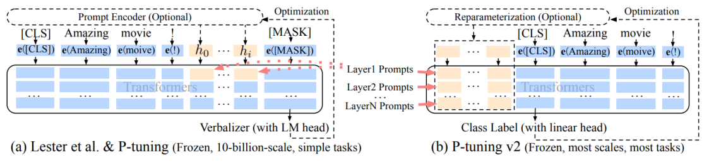
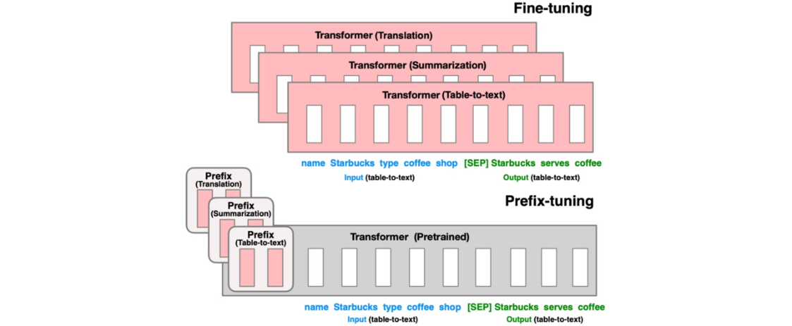
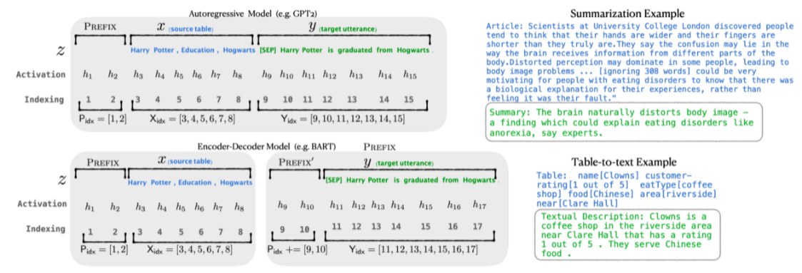
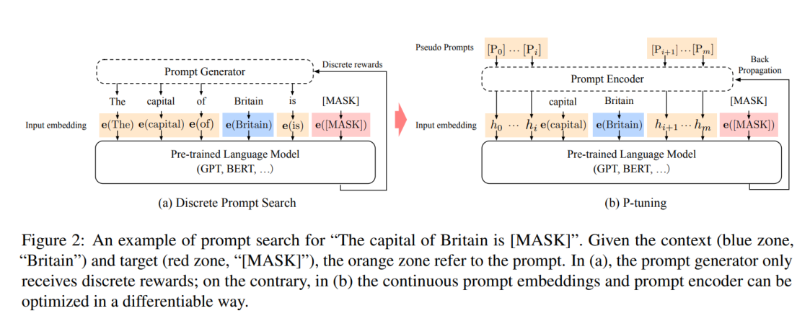
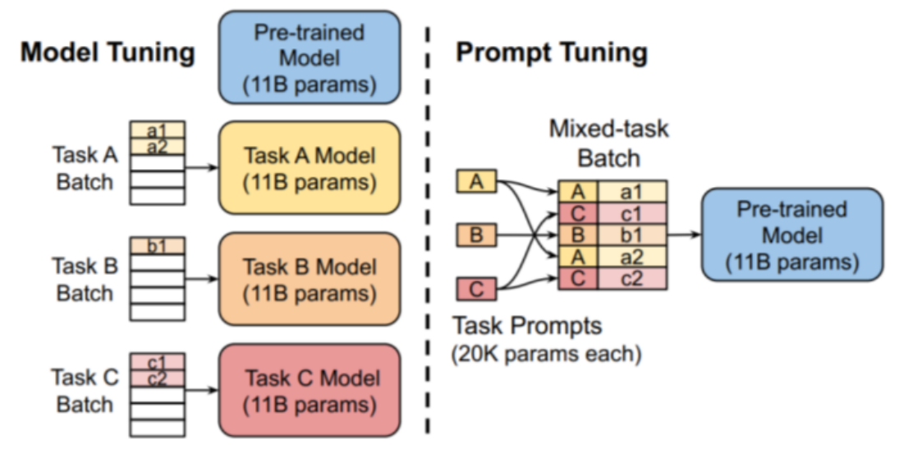

提示微调
一、背景与挑战
传统微调需要更新模型的全部或部分权重，带来：
-
显著的计算资源消耗；
-
大量存储开销；
-
多任务场景下管理和部署复杂。
提示微调则通过设计和学习软提示向模型注入任务信息，避免修改模型参数，极大降低训练成本和维 护复杂度。
二、提示微调的核心技术原理

提示微调的关键是将任务信息编码为可学习的连续向量（软提示），附加到输入序列前端：
-
软提示向量：一组可训练的嵌入，不是自然语言文本，直接与输入拼接。
-
• 冻结模型参数：模型权重保持不变，仅训练提示向量。
-
• 优化目标：通过反向传播调整软提示，使模型在特定任务上表现优化。
-
这种方式本质上是调整模型的输入上下文，引导模型生成符合任务需求的输出。
三、常见实现方式
1. Prefix Tuning
Prefix Tuning 是一种针对预训练Transformer模型的参数高效微调方法。它的核心思想是在 Transformer的每一层输入中，加入一组可训练的“前缀向量”（prefix vectors），这组向量作为额 外的上下文信息，会参与注意力机制的计算。

具体来说，这些前缀向量被附加在键（Key）和值（Value）矩阵之前，使得模型在计算自注意力时， 能够感知到这些新的上下文信息，从而调整模型输出。

特点：
-
只需训练前缀向量，不需调整模型原有参数，极大减少微调时的参数量。
-
保持模型主体权重不变，适合大模型微调和多任务共享。
-
前缀向量长度和Transformer层数相关，通常长度较短，训练成本低。
2. P-Tuning
P-Tuning 是一种基于可训练提示词（prompt tokens embedding）的微调技术，专注于优化模型对任 务提示的理解。它通过引入一串可训练的虚拟token，这些token对应的嵌入向量在输入序列之前附 加，作为模型输入的一部分。

与传统的“硬提示”（固定的自然语言提示词）不同，P-Tuning使这些提示词向量是可训练的，能够 根据具体任务自动学习最优的提示表征，从而提升下游任务性能。 特点：
-
训练过程中只调整提示词嵌入，不修改模型主体参数。
-
通过反向传播，优化提示词嵌入，使模型更好地理解任务意图。
-
• 支持对复杂任务的高效适配，且效果通常优于手工设计的提示。
3. Prompt Tuning
Prompt Tuning 是一种极简的微调方法，仅训练与提示相关的嵌入向量，并将其直接附加在模型的输 入层。它可以看作是P-Tuning的简化版本，关注在输入层增加可训练的提示嵌入，帮助模型更好地聚 焦任务信号。

这种方法通常只需训练很少的参数，极大减少了计算和存储开销，适合资源有限的场景。 特点：
-
只优化提示嵌入，参数量极小，训练效率高。
-
直接修改输入嵌入层，与模型结构无关，容易实现。
-
对模型保持高度黑盒性质，不干扰内部权重。
四、提示微调的优势与适用场景
-
显存和计算效率高
-
只训练少量提示参数，显著降低训练和存储成本。
-
多任务适配便捷
通过替换提示即可切换任务，简化部署。
- 避免模型破坏
原模型权重不变，减少微调带来的过拟合风险。
- 适用范围广 NLP任务、文本生成、对话系统、少样本学习等场景表现优异。
五、怎么使用？
-
选择合适的提示长度和初始化方式，有助于加速收敛。
-
不同模型和任务对提示设计敏感度不同，需进行实验验证。
-
• 软提示虽然高效，但在部分复杂任务上性能可能逊色于全参数微调。
-
• 结合其他微调技术（如 LoRA）可进一步提升效果。